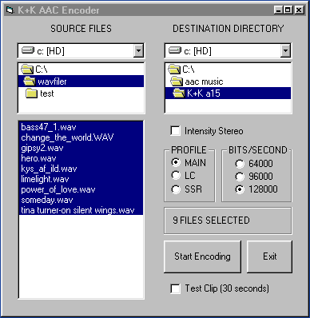
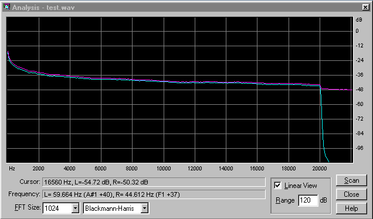

K+K Research is a development team working to offer the best in encoded (compressed) audio.
We use the latest fully optimized AAC technology to give the best audio quality in the smallest
filesize.
Our Music Publisher 01 gives full CD quality in a bitrate of a modest 128 kbps
(1:11 compression ratio). For less demanding applications (than CD quality) even larger compression
is possible , 96 kbps (1:16) and 64 kbps (1:22).
K+K Research Announces Music Publisher 01 |
Music Publisher 01 is a software package for compressing music utilizing state-of-the-art AAC technology.
Music Publisher 01 can produce full CD-quality files in 128 kbps bitrate (1:11 compression rate).
The MP01 package consists of a high-quality AAC encoder , a frontend for the encoder with batch-encoding,
and an AAC plug-in for Winamp , a versatile multiformat player (shareware).
Typical applications are; music publishing
(in a compressed format for faster download and smaller storage space), transfer or music between studio and radio
stations or similar.
Please contact us for details regarding demo version + tracks, licensing , lo cpu-usage plug-in....
IMPORTANT. Unzip plugin.zip and move in_aac.dll to /winamp/plugins before playing *.aac files.
IMPORTANT. Also make sure to rename track x.zip to track x.aac before playing them.
Download AAC sample track 1 1.2 MB
Download AAC sample track 2 1.2 MB
Download AAC sample track 3 1.1 MB
Download AAC sample track 4 1.1 MB
Download Winamp plugin 0.3 MB
Click on images below to see a larger picture.
|
|
MP01 Frontend |
MP01 freq. response
|
 Winamp player |
|
|
MP 01 FEATURES
|
Internet Music Distribution |
|
Studio to Radio transfer |
|
Compression of the Future |
|
| |
|
{kind=link}
{kind=link}